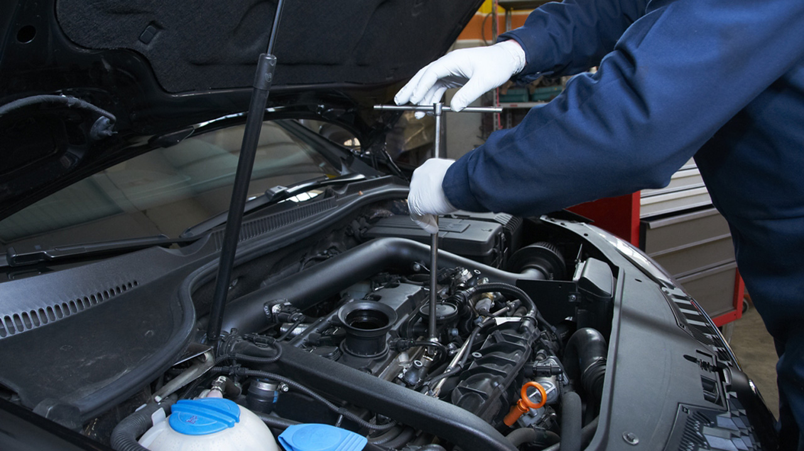
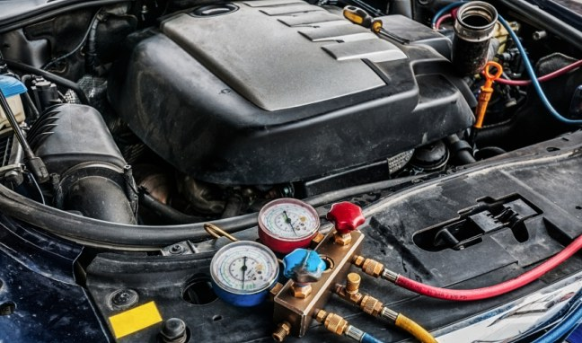
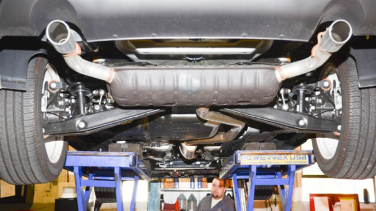
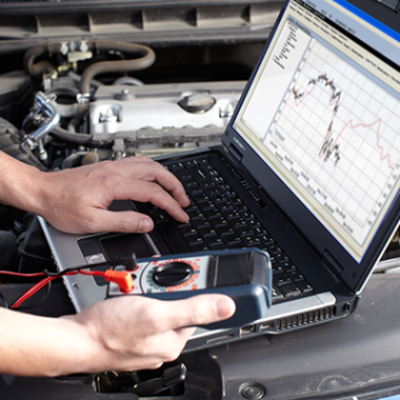

Kvalitetan rad po pristupačnoj cijeni
457
Zadovoljnih klijenata
554
Popravaka
4
Zaposlena
Nudimo širok raspon konkurentnih cijena te kvalitetu usluge. Nazovite nas radnim danom i pogledajte što vam možemo ponuditi. Sve naše cijene uključuju PDV i molimo vas da razumijete cijene se razlikuju po marki, modelu i dostupnosti.
Kontaktirajte nasUsluge
Montaža i balansiranje guma
Kupili ste gume kod nekog drugog, ili jednostavno želite montirati gume koje ste čuvali u garaži, nema problema. Naši servisi vrše montažu svih guma.
- Ugradnja i balansiranje auto gume 12ʺ-14ʺ = 50 kn
- Ugradnja i balansiranje auto gume 15ʺ = 60 kn
- Ugradnja i balansiranje auto gume 16ʺ = 70 kn
- Ugradnja i balansiranje auto gume 17ʺ-18ʺ = 80 kn
- Ugradnja i balansiranje auto gume 19ʺ-20ʺ = 90 kn
- Ugradnja i balansiranje auto gume 21ʺ-26ʺ = 100 kn
Montaža i balansiranje guma

Pregled i popravak kočnica
Sustav kočenja je jedan od najvažnijih komponenata svakog vozila, zato što je zaduženo za Vašu sigurnost.
Standardni servis kočnica:
- Pregled trenutnog stanja sustava kočenja
- Inspekcija glavnih dijelova kočnice
- Instalacija kočionih pločica i čeljusti
- Zamjena prednjih i zadnjih kočionih pločica
- Zamjena prednjih i zadnjih diskova
- Zamjena crijeva kočnica
- Zamjena ulja iz sustava
- Obrada kočionih diskova
Pregled i popravak kočnica

Veliki i mali servis vozila
Kupili ste gume kod nekog drugog, ili jednostavno želite montirati gume koje ste čuvali u garaži, nema problema. Naši servisi vrše montažu svih guma.
Mali servis:
- Zamjena ulja
- Zamjena filtera ulja
- Zamjena filtera klime
- Zamjena filtera zraka
- Zamjena filtera kabine
Veliki servis:
- Zupčasti remen
- Tračni remen
- Klizači (vodilice)
- Natezači (špraneri)
- vodena pumpa
Veliki i mali servis vozila

Popravci motora
Pogonska jedinica automobila (motor) sastoji se od mnogih tehnički kompliciranih komponenti koje tijekom vremena mogu biti izložene kvarovima zbog lošeg rada, neodgovarajućeg servisiranja ili vanjskih uzroka.
Koraci u obavljanju usluge:
- Uklanjanje motora iz vozila
- Rastavljanje motora
- Provjera statusa svih komponenti
- Zamjena oštećenih dijelova
- Zamjena remena
- Popravak glave cilindra, ako je potrebno (izmjena brtvila)
- Popravak / reparacija mlaznica goriva
- Popravak / reparacija turbokompresora, ako je potrebno
- Popravak bloka motora, ako je potrebno (zamjena klipova, glavnih ležajeva, ležajeva)
Popravci motora

Servis klime
Kada se temperatura diže, nema ništa više osvježavajuće nego vožnja u hladnom, klimatiziranim automobilu. No, tijekom vremena, spojnice klime postaju labave, izvor neugodnih mirisa u unutrašnjosti vozila često dolazi iz AC sustava i Vaše ledeno osvježenje može čak postati izvorom po zdravlje opasnih mikroorganizama.
Cijene:
- Dijagnostika = 180 kn
- Punjenje = 280 kn
- Dopunjavanje = 220 kn
- Čišćenje AC aeroseptom = 100 kn
- Popravak i izrada crijeva = do 350 kn
Servis klime

Ispušni plinovi
Ispušni sistem na vozilu, kao i ostale komponente vozila, ima vrlo važnu ulogu. Naime, ispušni sistem na vozilu, osim stišavanja buke ima funkciju pravilnog i maksimalnog odvoda ispušnih plinova iz motora. Stoga, vrlo je važno odlučiti se za tvornički izrađeni lonac ili ispušni element, koji ima točno proračunat promjer cijevi i veličinu lonca u skladu sa snagom motora.
Cijene:
- Dijagnostika = 180 kn
- Punjenje = 280 kn
- Dopunjavanje = 220 kn
- Čišćenje AC aeroseptom = 100 kn
- Popravak i izrada crijeva = do 350 kn
Ispušni plinovi
Optika
Ako primijetite da vaše vozilo zanosi udesno ili ulijevo kad na jedan kratak trenutak pustite kolo upravljača dok vozite ravno morate provjeriti geometriju svojih kotača. Podesite geometriju kotača, odnosno podesite dijelove prednjeg i stražnjeg ovjesa. Ako vaše vozilo nije ispravno podešeno to može uzrokovati preuranjeno trošenje pneumatika.
Koraci:
- Provjera kompletnog ovjesa vozila u samo 60 sekundi s Quick Check Comp controlom
- Nova tehnologija preciznih meta koje se postavljaju na kotače
- 4 x visoko rezolucijske 3D kamere koju su izuzetno precizne te svojim načinom snimanja garantiraju 100% tvorničke postavke na vozilu
- Code Link bežični el. uređaj za spajanje te poravnanje volana s bazom vozila (HUNTER CODE LINK RESETS)
- niz dodatnih noviteta poput mapa za sve tipove vozila koji su trenutno dostupni na svjetskom tržištu
Optika

Računalna dijagnostika
Dijagnostika se radi tako da se uređaj za dijagnostiku (poznat kao dijagnostički tester) spaja na računalo od vozila. Ova usluga omogućuje provjeru ukupnog tehničkog stanja vozila, uključujući usporedbu parametara vozila s idealnim parametrima. S tim usporedbama vrlo se lako otkriju kvarovi na autu, te se mogu brzo ukloniti.
Koraci u obavljanju usluge:
- Spajanje uređaja za dijagnostiku
- Traženje koda greške
- Dešifriranje koda greške
- Printanje rezultata dijagnostike
- Komentiranje rezultata dijagnostike